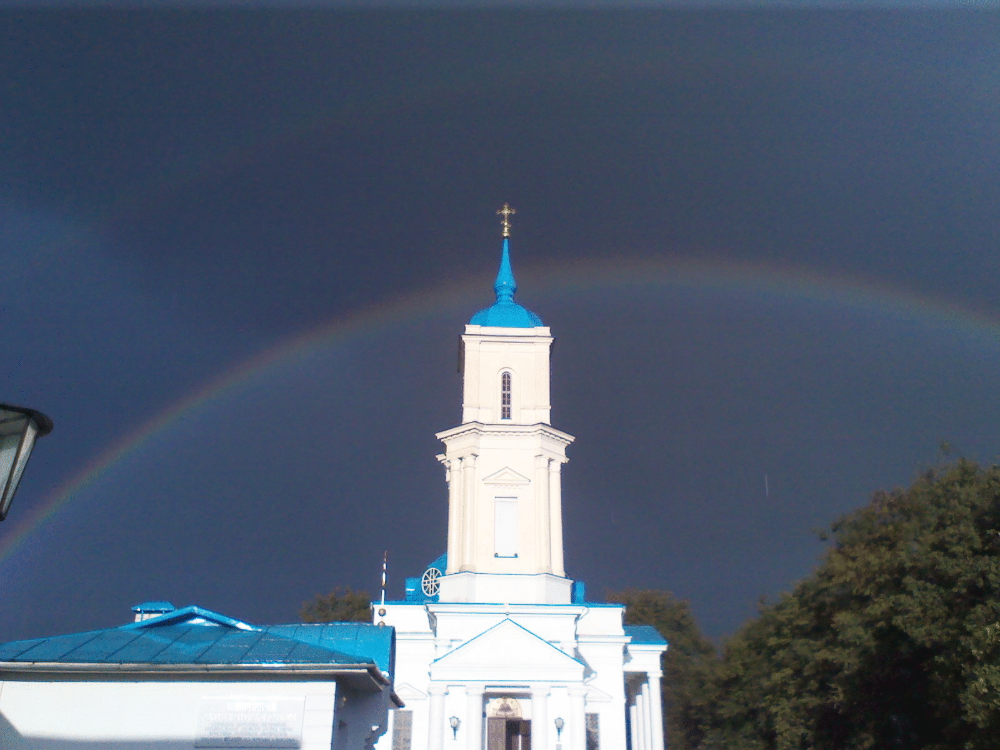

Информация о храме (расположение, клирики, иконная лавка, контакты)
Храм расроложен по ул.Куйбышеав 9а
В иконной лавке можно подать молебны, панихиды, записки, сорокоусты о здравии и упокоении
Контакты:
Иконная лавка: тел.66-90-92
Канцелярия и крестилка: тел./факс 66-51-03
Храм расроложен по ул.Куйбышеав 9а
В иконной лавке можно подать молебны, панихиды, записки, сорокоусты о здравии и упокоении
Контакты:
Иконная лавка: тел.66-90-92
Канцелярия и крестилка: тел./факс 66-51-03

В течении всего года богослужения совершаются:
Вторник
830 - Молебен с акафистом св. вмч. Пантелеимону1800 - Вечерее богослужение
Среда
830 - Литургия1800 - Вечерее богослужение
Пятница
1800 - Вечерее богослужениеСуббота
830 - Литургия1800 - Вечерее богослужение
Воскресенье
700 - Литургия930 - Литургия
1800 - Вечерее богослужение
Таинство Крещения совершается (в течении всего года, кроме Пасхи):
Суббота и воскресение
с 900 до 1100 - детив 1700 - взрослые
На Пасху в 1400
Собеседования для крёстных проводятся по субботам в 1700в здании Воскресной школы
Новости прихода
колонка 3 текст
колонка 4 текст